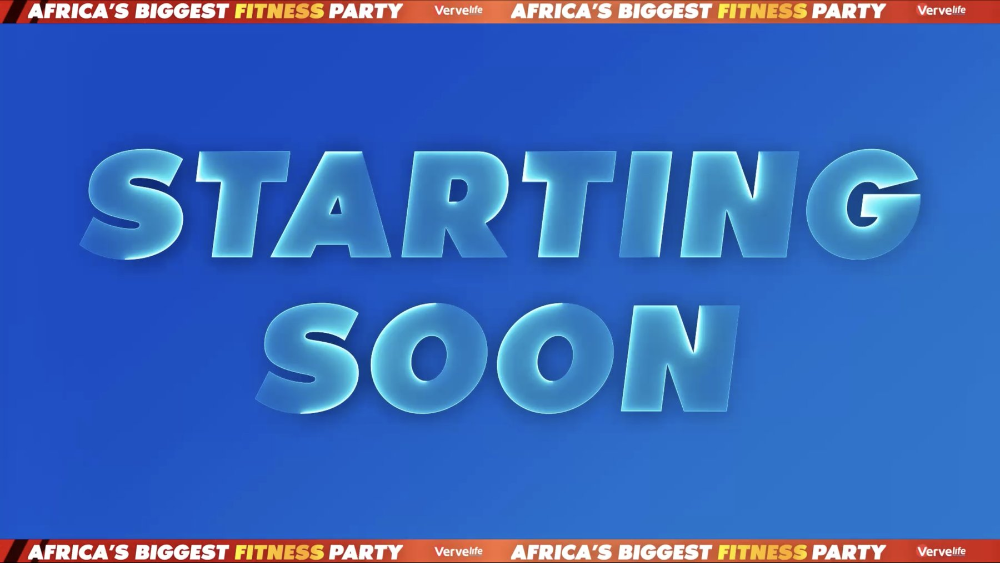

Vervelife 2024 was the earlier edition of Interswitch's fitness event — the show that set the visual groundwork I'd build on the following year. It needed the same kind of full on-screen toolkit: content built for the pace of a live workout floor, not a conference stage.
My scope covered trainer intro videos to open each session with energy, holding screens to keep the room alive between sets, name and session plates to keep people oriented, and a logo animation to brand the event from open to close.
I built the direction around the same fitness energy that carried into 2025 — bold, high-tempo motion that speaks to a workout crowd, not a boardroom. Every asset shared one system, so a trainer's intro, a session plate, and a holding screen all read as pieces of the same event.

Short, high-energy intros that hype up each trainer before their session starts.
A templated system of on-screen name cards for each trainer, built so new names could be swapped in fast on event day.
Companion cards carrying each session's details on screen, built on the same template system as the name plates.
Loopable holding screens kept the room visually alive during downtime, giving the space energy even when nothing was happening on stage.
Simple animated backdrops designed to sit behind everything else — adding movement and color without competing with the plates and videos layered on top.
I delivered a complete on-screen toolkit for Vervelife 2024 — trainer intros, plates, holding screens, and a logo animation — setting the visual system that carried straight into the 2025 edition.